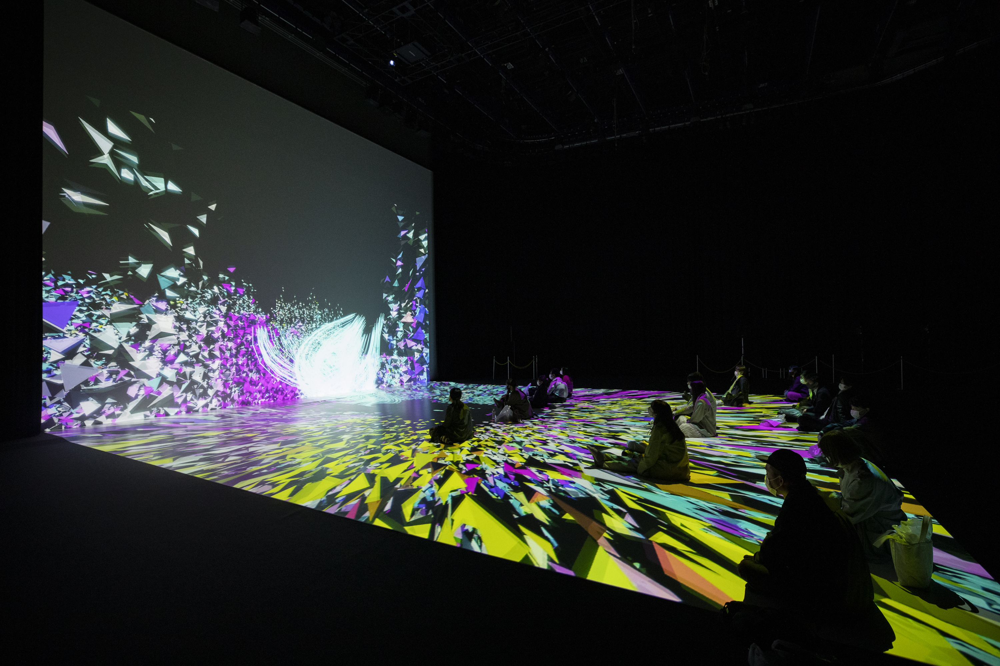
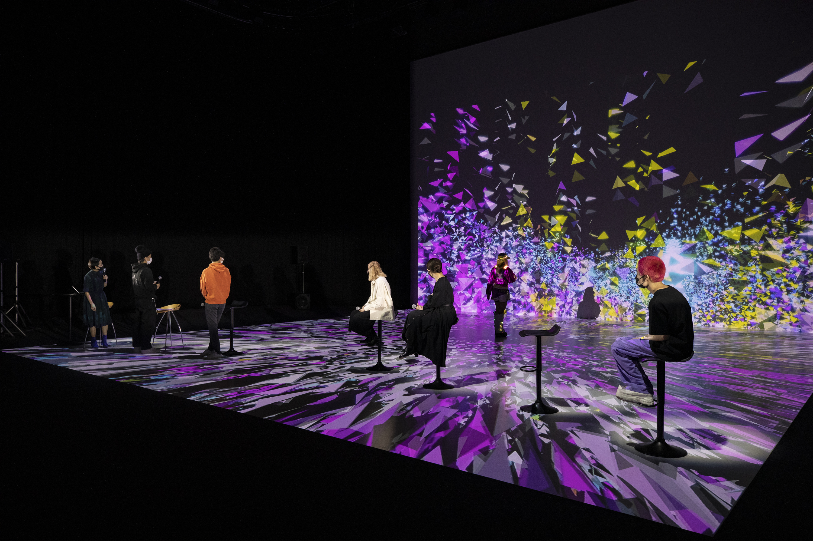

EndlessImaginary
Description
In recent years, toolkits and software environments for digital creation evolve and prevail drastically, and the number of creators working with media technology has increased rapidly. Additionally, with the spread of VR devices and the lower cost of projectors, the hardware environment has also been paved so that you can find immersive creative works with a variety of ideas.
Rhizomatiks, as have long been involved in the development and support of the next generation, calls for artists under the age of twenty five last year spring to provide an environment for creation and place to present them. We will hold an exhibition where new large-scale projection mapping works by those selected young creators, aged between 20 and 24, will be projected on three screens set up in the Panasonic Center Tokyo A Studio.
Three of Panasonic's DLP® SOLID SHINE laser projectors will create an immersive space where the audience can experience the most cutting-edge visual expression.
In this exhibition, the motion of the dancers from "ELEVENPLAY", a dance company led by a director and choreographer MIKIKO, are take as motion capture data, and those data will be used to create works by Rhizomatiks and four young creators, which will also be presented on the web.
In addition, a talk event will be held during the exhibition period, where young creators and Rhizomatiks will talk about creations of the next generation in open discussion.
Please enjoy the creation by young creators who will lead the next generation and their collaboration with Rhizomatiks, which provide the wide range of opportunities for presentation for the young generation.
Gallery

- 

- 